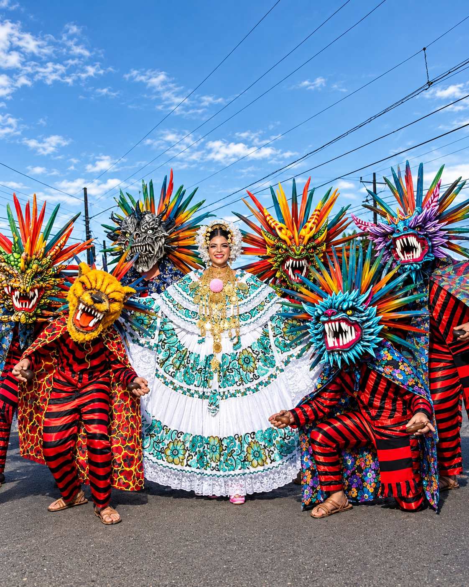

Craft Workshops
Learn about ceramics, tembleques and the sombrero pintao through the history, skills and meaning held in every piece.
Discover craftsPanaRoots is a tourism platform created to connect international visitors with authentic Panamanian experiences centered on culture, traditions, gastronomy and local communities.
It brings together practical recommendations, cultural context, experience ideas and space for local makers, helping each trip feel more personal and better connected to the people who give Panama its character.

These experience families come directly from the PanaRoots concept. Specific dates, hosts, duration and availability are confirmed before booking.
Learn about ceramics, tembleques and the sombrero pintao through the history, skills and meaning held in every piece.
Discover craftsApproach Carnival, Corpus Christi, parades and folklore with context, respect and a clearer sense of place.
Meet the traditionsTaste familiar favorites such as hojaldre, tamales and patacones while learning the stories behind Panama's table.
Follow the flavorsExplore history, heritage and local communities through destinations that reveal more than a standard sightseeing stop.
Explore cultureUse destinations to understand the landscape, cultural setting and kinds of experiences that may fit your route.

Connect Casco Antiguo, Panama Viejo, museums, markets and the canal's living history in one urban base.
Explore the capital
Cool mountain air, coffee culture, seasonal food and forest trails make Boquete a natural extension of the PanaRoots story.
Explore Boquete
Meet the region closely associated with polleras, music, festivals, artisan knowledge and some of Panama's best-known traditions.
Explore AzueroExplore annual highlights by month and interest. Dates can change, so the calendar clearly separates recurring guidance from officially confirmed schedules.
A major celebration of Panama's national dress, artisan skill, music and Azuero identity.
Four days of music, parades and regional traditions, with dates tied to the calendar before Lent.
Theatre, music, dances, masks and processions combine religious devotion with living popular traditions.